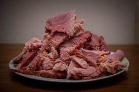

Corned Beef Roast

Description
This corned beef roast is easy to prepare and wonderful to eat.
Plan to roast for about one hour per pound.
Ingredients
- 1 (5 1/2 pound) corned beef brisket with spice packet
- 7 small potatoes, peeled and diced
- 4 medium carrots, peeled and diced
- 1 medium onion, diced
- 3 cloves garlic, chopped